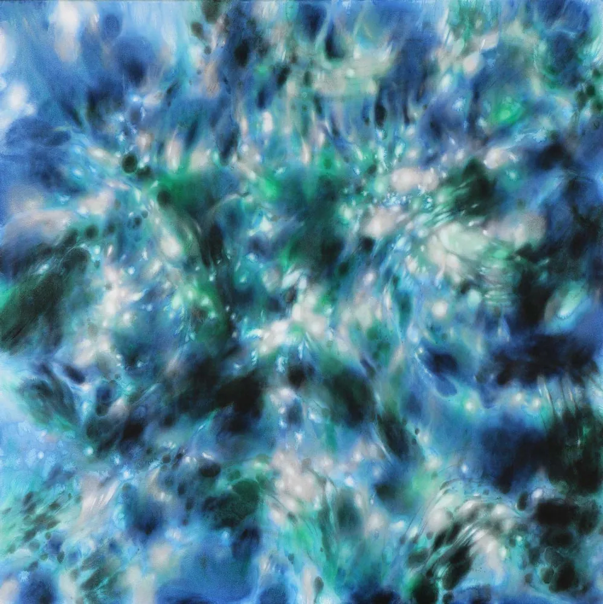

Zhi-Qing Liang


Seitlich wischen, ein Werk nach dem anderen
Sie sollten nicht auf mich neugierig sein, sondern auf sich selbst.Zhi-Qing Liang, zitiert in CommonWealth Magazine (Zitat und Quelle werden noch bestätigt)
Wo beginnen
 Wann haben Sie Ihren eigenen Körper zuletzt wirklich gespürt?Körper und Begehren
Wann haben Sie Ihren eigenen Körper zuletzt wirklich gespürt?Körper und Begehren
Welches Wetter herrscht gerade in Ihnen?Landschaften des Inneren Was lässt Sie beim Gehen stehen bleiben?Über das Land gehen
Was lässt Sie beim Gehen stehen bleiben?Über das Land gehen Wie lange ist es her, dass Sie eine Blume wirklich angesehen haben?Eine Blume wirklich ansehen
Wie lange ist es her, dass Sie eine Blume wirklich angesehen haben?Eine Blume wirklich ansehen Gab es etwas, das Sie nicht geplant hatten und das doch genau passte?Licht und Zufall
Gab es etwas, das Sie nicht geplant hatten und das doch genau passte?Licht und Zufall
Sie müssen nicht antworten. Sie können auch alle Werke ansehen. (Gruppierung und Fragen sind Beispiele für den Entwurf; Bestätigung durch Herrn Liang steht noch aus)
Ein Weg von dreißig Jahren
- 1991–1995Psyche und ErosPsyche & Eros5 Werke
- 1996–1998InnenansichtInterior Scene8 Werke
- 1999Zustand des HerzensState of Heart3 Werke
- 2000–2014Realismus (Zhi Xiang)Realism (Zhi Xiang)7 Werke
- 2007–2009Im GehenTake a Walk7 Werke
- 2010FließenFlowing8 Werke
- 2010Wolke, Berg, WasserCloud, Mountain, Water3 Werke
- 2011–2012Blume – Form und FarbeFlower — Form and Colour6 Werke
- 2012Tausendjähriger GlanzMillennial Splendour2 Werke
- 2017–2018Guang BianGuang Bian (Light Shift)10 Werke
- Seit 2023, laufendRyukinRyukin (working title)1 Werk
- 2024AbiogeneseAbiogenesis13 Werke
Drei Entfernungen
Fern｜Index
Einen Schritt zurücktreten und die ganze Wand sehen. Filtern nach realistisch, abstrakt oder auf Anfrage erhältlich.
Index öffnenNah｜Nur Bild
Auf jeder Werkseite „Nur Bild“ wählen: Die Oberfläche tritt zurück, nur das Gemälde bleibt.
Ausprobieren